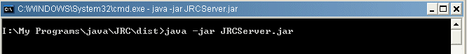
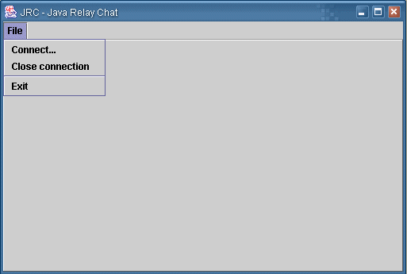
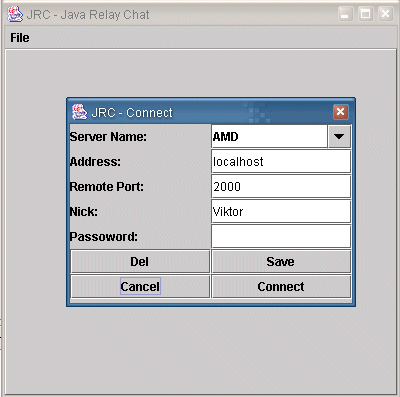
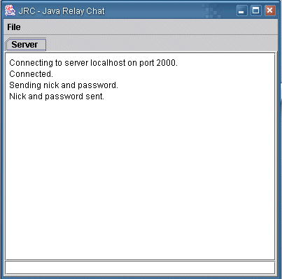
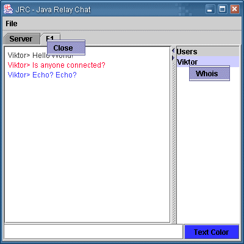

What is JRC?
JRC stands for "Java Relay Chat" and is a free and independent chat system developed in the Java programming language.
It uses a very simple text based protocoll to communicate between the server and clients.
What do I need to run the JRC server?
The first thing you need is a Java Virtual Machine, you can download this from Sun, after that you dont need much more :)
The server has no user interface so no graphics system is requred on the server. All you see when the server is running is a black screen.

How do I start the server?
The server is easy started from the command prompt of you system. By default the server starts on port 2000 but this can be changed by providing a command line parameter.
To start the server just,
java -jar JRCServer.jar [PORT]
java -jar JRCServer.jar [PORT]
java -jar JRCServer.jar [PORT] &
What do I need to run the JRC Client software?
You need a JVM for the client also. The client also uses JDOM so you need to have this installed and configurated on your system before you can run the client software.
When you have this 2 components installed you can start the client by just,
java -jar JRCClient.jar
java -jar JRCClient.jar
How do I use the client?
When you start JRCClient you will get this Window,

Here from the menu you can select,
When you select Connect you will get this screen,

Here you can select a saved connection from the combo box or you can enter the data the server needs, address, port and nick name. Password use is not added to my server software but my be added by other servers.
To save the connection data press the "Save" button and make shore that you have enterd a name for the connection in the combo box. The connection will be saved in the file servers.xml, the file will be created in the root folder for this program. You can also delete a connection from this file by pressing the delete button.
When you are ready to connect to a server just press the connect button.
If you have a open connection you close it with this menu item.
ExitAs the name say, this will let you exit the progam. All connections to the server will be closed.
Ok, what do I do when I have pressed "Connect"?
When you are connected you will see this screen,

Now you can start using the program.
You use the program by writing commands in the text field at the bottom of the screen. The commands are,
Ok, what do I do when I have entered a channel?
Then the fun starts, everything you write is sent to everyone connected that channel.
The chat window looks like this,

You write you text in the text field at the bottom of the screen, when you press enter its sent to all other connected users. On the right side of the text field you can select what text color you want to use, press the button to bring upp the color selector. Also on the left side you have the user list. This is a list of all users that are currently connected to this channel. If you right click on a user you get a menu and the option to ask the server who this user is, the response is recived in the server window, you can activate this winow again by clicking the server tabb at the top of the window. You can always walk between tabbs this way. If you right click on a tabb you get a close menu, this will close that channel. You can connect to as many channels as you want at the same time, just walk between them with the tabbs.
I love this program and have added my own code to it, but who do I compile it?
In the root folder there is a build.xml, this is a Ant build file, use this to build the class files, pack the class files into jar files and build the javadoc files.